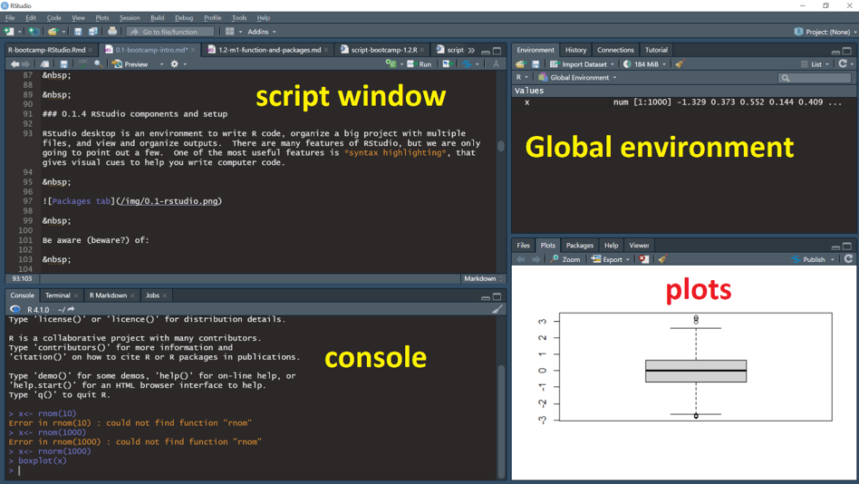
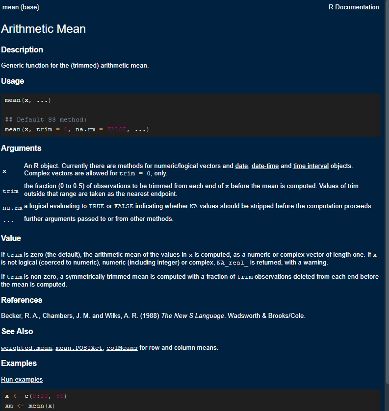

x <- c(21, 3, 5, 6, 22)
x[x > 20][1] 21 22Syntax bootcamp

R is a programming language designed to help non-programmers perform statistical analyses and to make graphs. This session is intended to guide people through some of the basics of the R programming language, just enough to get started.
.R (Scripts).Rmd (R Markdown).Qmd (Quarto Markdown).ipynb (Jupyter Notebooks)R projects and data can be saved in the following formats:
RStudio Project files, organizing scripts and data (.Rproj)
Workspace or multiple R objects (.RData)
Single R object (.Rds)
Example:
This presentation comes from a .Qmd document. It has a bunch of text called markdown, sprinkled around R code. The slides and images for the presentation are all organised neatly into an R project in a folder, with a .Rproj overlord
For the purposes of getting started with syntax, we will work strictly with a lone script
Document Your Work: Scripts are a a record of your progress
Organise Your Code: Proper structure improves reproducibility
Write for Others: e.g. your future self or supervisor
Use Comments & Pseudocode: human readable with obvious flow
Work through the instructions here in RStudio as you go along
Type you own code rather than using copy and paste
Document all the code in your own script and write clear, concise comments
The hashtag is used to declare comments
Anything that comes after a # on the same line is ignored by the R interpreter during execution
Don’t just litter everywhere (e.g. storing code as comments)
## signsAlways have a header that introduces what the script is about, hopefully with a version number
## HEADER ####
## Who: <YOUR NAME>
## What: R syntax basics
## Last edited: <DATE TODAY in yyyy-mm-dd format>
## Version: 1.000
###### CONTENTS ####
## 1.1.1 Example script, help, pseudocode
## 1.1.2 Math operators
## 1.1.3 Logical Boolean operators
## 1.1.4 Regarding base R and the Tidyverse
## 1.1.5 Practice exercises # ---- Loading libraries ----
library(stats)
# ---- Iris scatter plots ----
plot(iris)R has a strong community with many websites, books, blogs, and more.
The vast array of resources can be overwhelming for beginners.
Best Practice: Start with the R Help System + Use the built-in R Help system first before exploring external resources
help() function.Syntax:
help(function_name)
mean() function# Display help page for the function mean
help(mean)
Help pages have a consistent structure
1 Function name {Package name}: Tells you the package of the function
2 Short description: What the function does in brief.
3 (longer) description: What the function does
4 Usage: An example of the function in use and “arguments”
5 Argument definitions: What the argument are and what they do!
Value: What the function returns
Using the Usage and Argument fields, we can figure out how to make the function do the work we want.
# mean(x, ...)
# The "x" is an argument that is required
# The "..." means there are other optional arguments# x
# An R object... for numeric/logical vectors ...
my_length <- c(101, 122, 97) # 3 numerical measures
mean(x = my_length) Pseudocode is a way to break up a big task into a series of smaller tasks. For example:
Basic manipulation of numbers in R is very easy and intuitive. Let’s try this non-exhaustive list:
Arithmetic
# Add with "+"
2 + 5
# Subtract with "-"
10 - 15
# Multiply with "*" and Divide by "/"
(6 * 4.2)+(10 / 4)# raise to the power of x
2^3
2**3
9^(1/2) # same as sqrt()!
9**(1/2) # same as sqrt()!
# There are a few others, but these are the basicsFor complicated phrases like 2 + 2 * 8 - 6. the BODMAS/PEMDAS rule is followed unless unless a specific order is coded.
# Try this
4 + 2 * 3
# Order control - same
4 + (2 * 3)
# Order control - different...
(4 + 2) * 3# Try this
6+10 # no spaces
7 -5 # uneven spaces
1.6 / 2.3 # large spaces
16 * 3 # exactly 1 space
# exactly 1 space is easiest to read...Boolean operators are expressions that resolve TRUE (treated as “1” in most computing systems including R) versus FALSE (“0”). A typical expression might be something like asking if 5 > 3, which is TRUE. More sophisticated phrases are possible, and sometimes useful.
3 > 5
# 3 is compared to each element
3 < c(1, 2, 3, 4, 5, 6) #This asks if both phrases are true
3 > 1 & 1 < 5
3 < 1 | 1 < 5
3 < 1 | 1 > 5<- is the ASSIGNMENT syntax in R, which puts the value on the left “into” xx <- c(21, 3, 5, 6, 22)
x[x > 20][1] 21 22# Try this
TRUE # plain true
!FALSE # not false is true!
6 < 5 #definitely false
!(6 < 5) #not false...
!(c(23, 44, 16, 51, 12) > 50) library(help = "base")read.table(), data.frame(), etc.ggplot2, dplyr, tidyr, readr, tibble, and purrr.traceback() -Most of the times, it’s because: